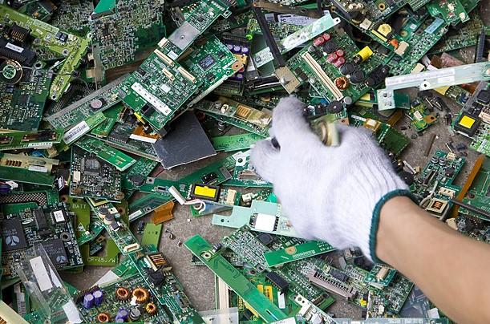

Recuperar significa extraer energía o materiales a partir de
residuos. Por ejemplo:
* El vidrio y la goma procesada pueden ser usadas como materiales para la construcción de carreteras
Ejemplo de una maquina de recuperación
§
Ejemplo de una maquina de recuperación
§
Obra publicada con Licencia Creative Commons Reconocimiento Compartir igual 4.0